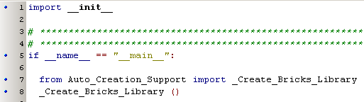
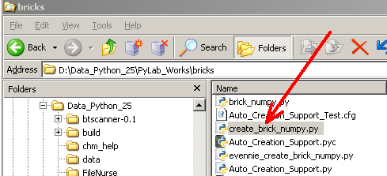
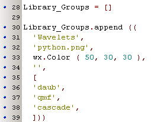
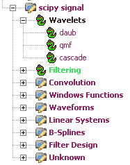
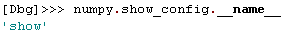

Auto Generating Bricks Library  ( august 2009 )
( august 2009 )
Application Designer / Domain Expert / Control Designer / Core Developer
Introduction
Creating a bricks library from a arbitrary Python library can be done automatically, with just a few lines of code:

The great trick is in the filename, the file should in the directory "PyLab_Works\bricks" and the filename should be "create_brick_xxx.py", where xxx is the name of the python library to be translated. In the next example, the generation of bricks from the numpy-library is shown.

As the Brick design is quit straight forward and creates simple user interfaces, it might be worth to modify some or all of the generated bricks. It's also possible to exclude a number of functions, because they are not wanted.
Options
You can create extra bricks, by creating them in the normal way in the file "create_brick_xxx.py". These bricks will be placed at the top of the generated Bricks Library. The automatic generated bricks will be placed in alphabetical order.
You can override automatic generated bricks, by creating a brick in "create_brick_xxx.py", by placing a brick with the same name in the creation file.
You can exclude automatic generated bricks, by putting there name in the Excluded list.
You can order and arrange the Bricks within one library in Groups.
Grouping
Functions within one Brick library can be arranged in groups. A group will be represented in the library tree as a subnode of the library file. For each group you must specify the name. You can also specify a different tree-icon and/or a different color. If you use Icon / color, set the value to None and the library defaults will be used. The groups are inserted in the tree, in the order they are created. All functions that not fall within one of given groups, will be put in the group "Unknown", which will be placed at the bottom of the tree.
 
Numpy
